Atardecer en Potreros
Vista del atardecer sobre los campos y colinas de la comunidad.
Registro visual de la naturaleza, el entorno rural, cultivos y la vida en Trancas Viejas
Vista del atardecer sobre los campos y colinas de la comunidad.

Panorámica del cielo al caer la tarde sobre el entorno local.
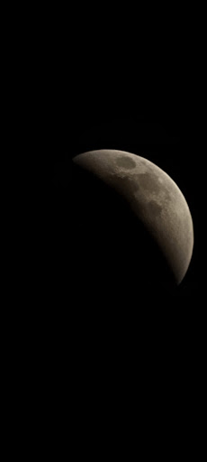
Detalle del cielo nocturno sobre la localidad.
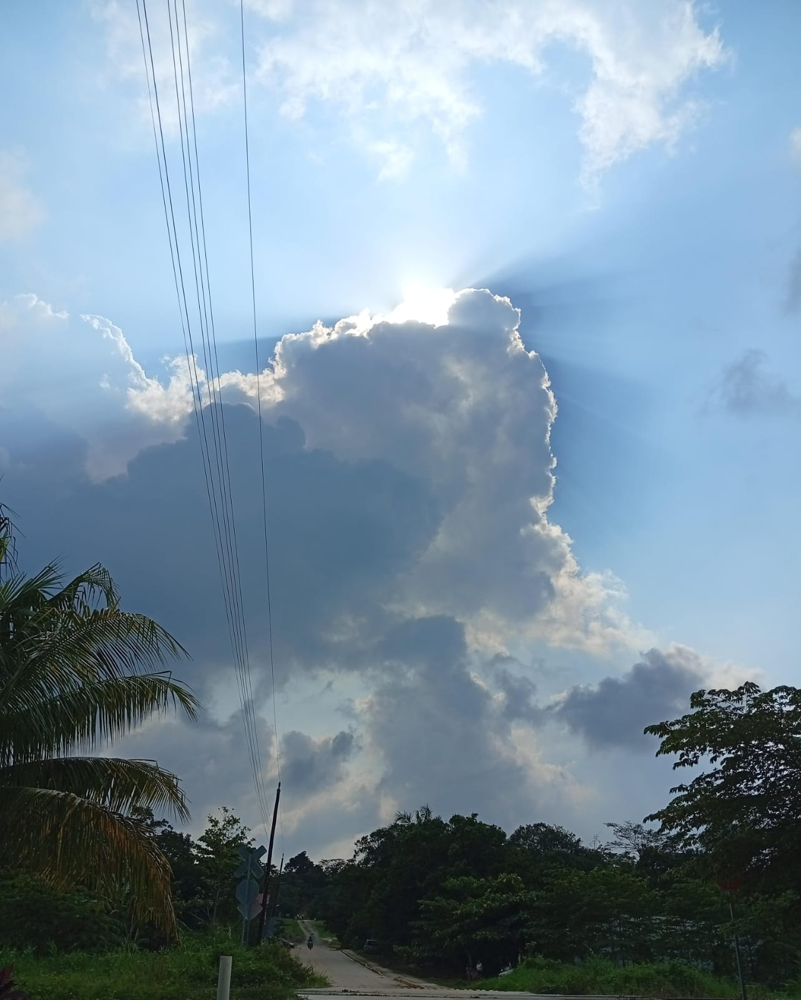
Paisaje habitual de los accesos a la comunidad.
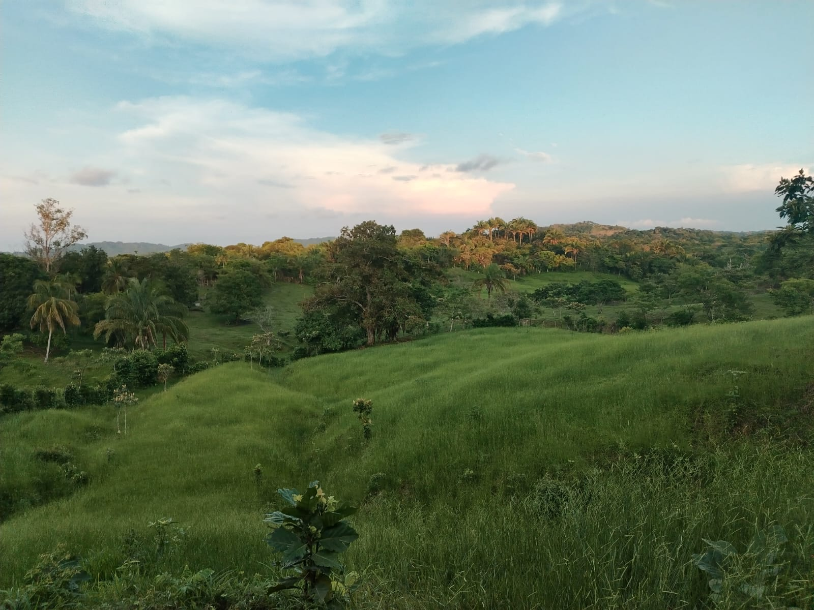
Paisaje de las áreas verdes y vegetación del ejido.
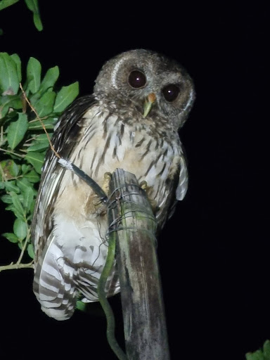
Registro de un tecolote durante la noche en la zona.
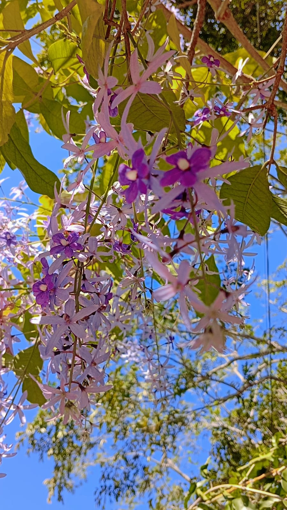
Ejemplar de floración morada característica de la vegetación local.
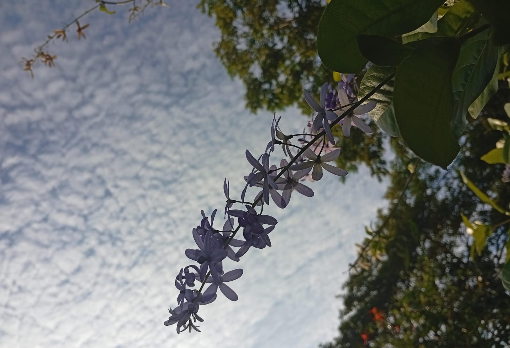
Detalle de la vegetación del sur veracruzano.
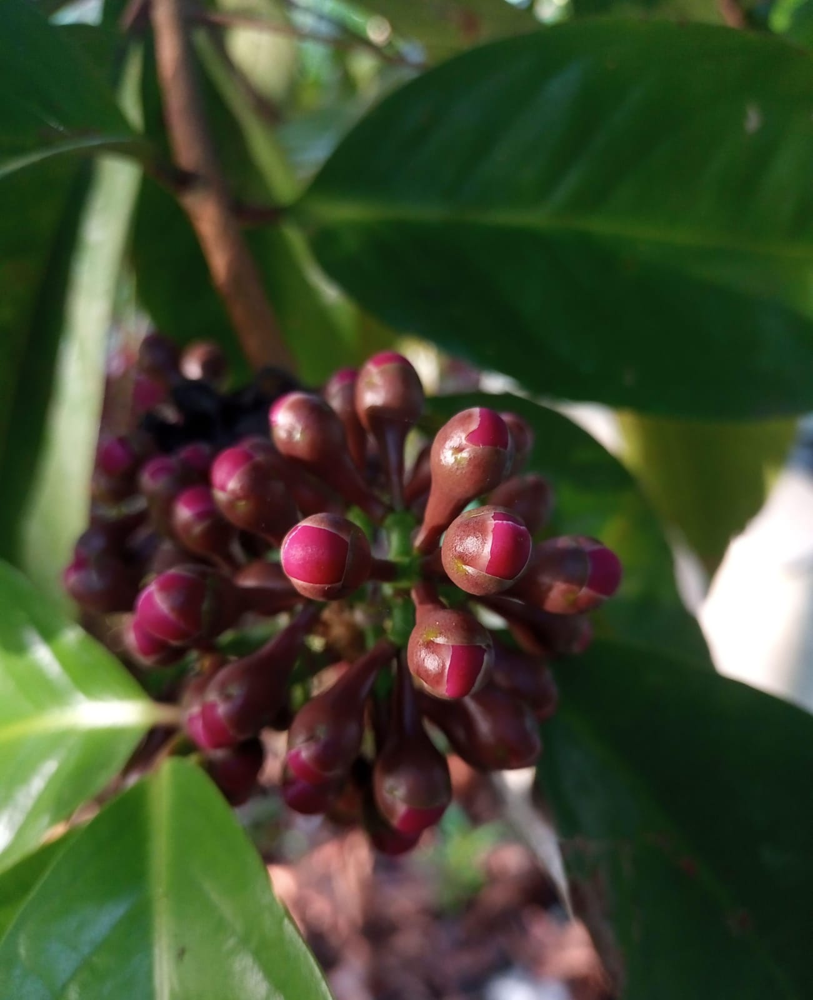
Detalle de flor de árbol frutal de la región.
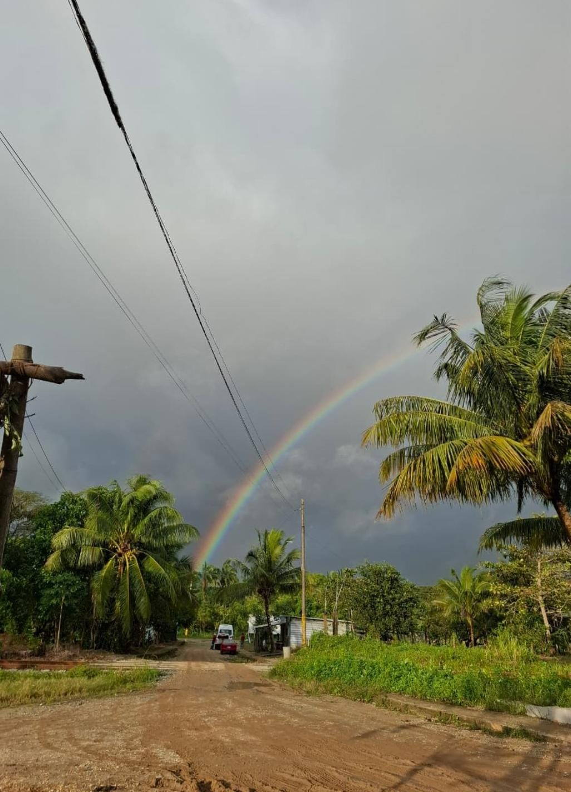
Fenómeno natural sobre el acceso principal y las palmeras de la comunidad.
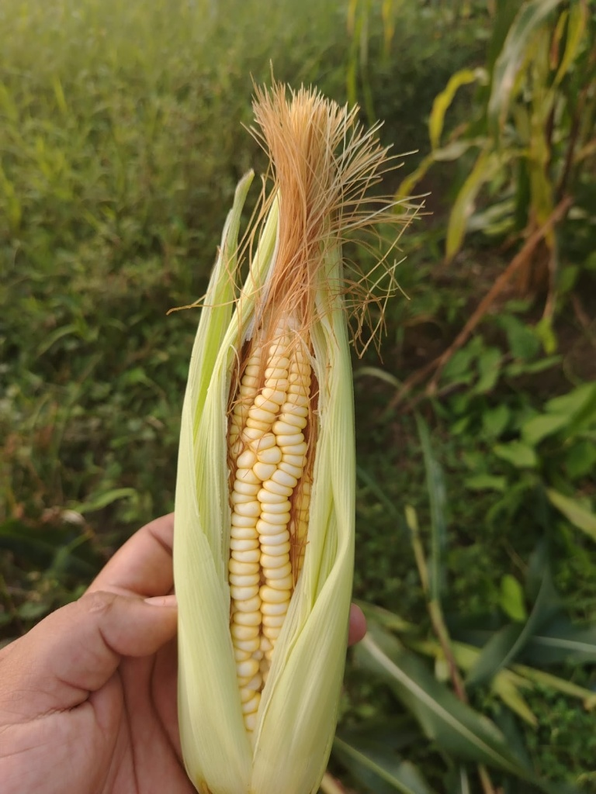
Muestra del cultivo de maíz tierno cosechado en las parcelas locales.
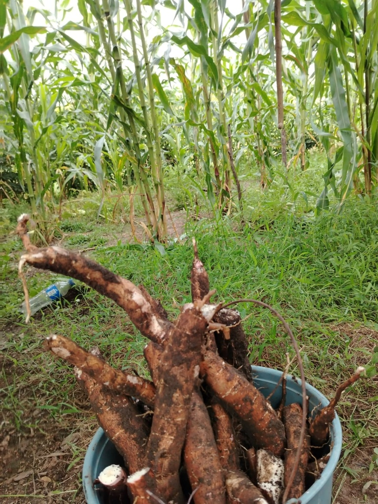
Producción agrícola tradicional obtenida directamente del trabajo en la tierra.
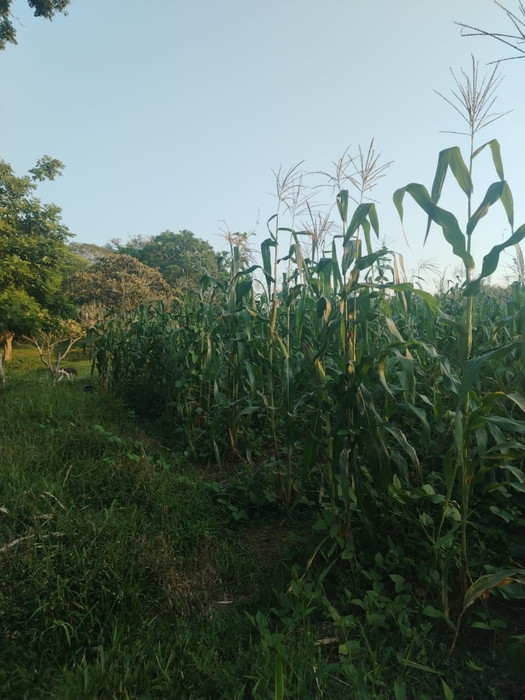
Vista de las áreas de cultivo agrícola que caracterizan el paisaje ejidal.
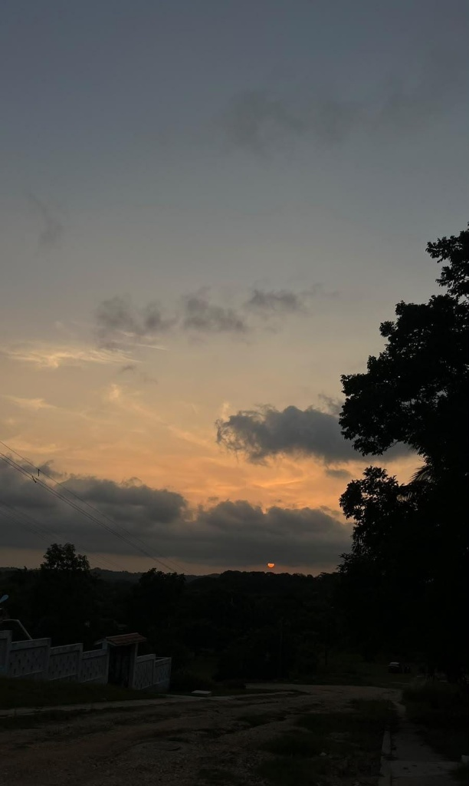
Puesta de sol vista desde las zonas elevadas del poblado.
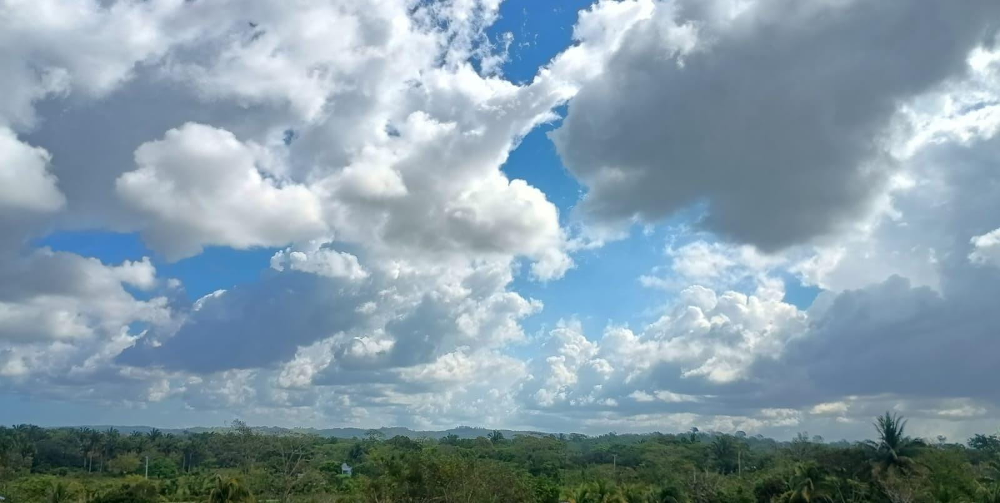
Vista panorámica de la vegetación veracruzana bajo un cielo despejado.
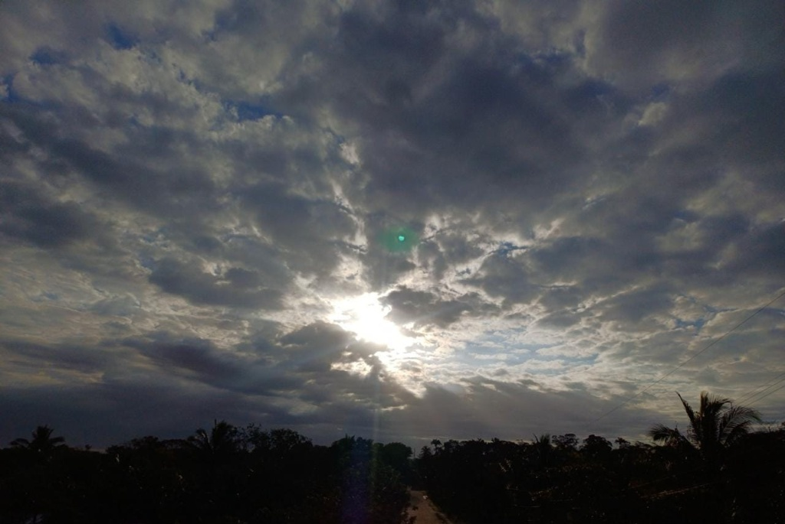
Detalle del sol abriéndose paso entre las nubes durante la tarde.
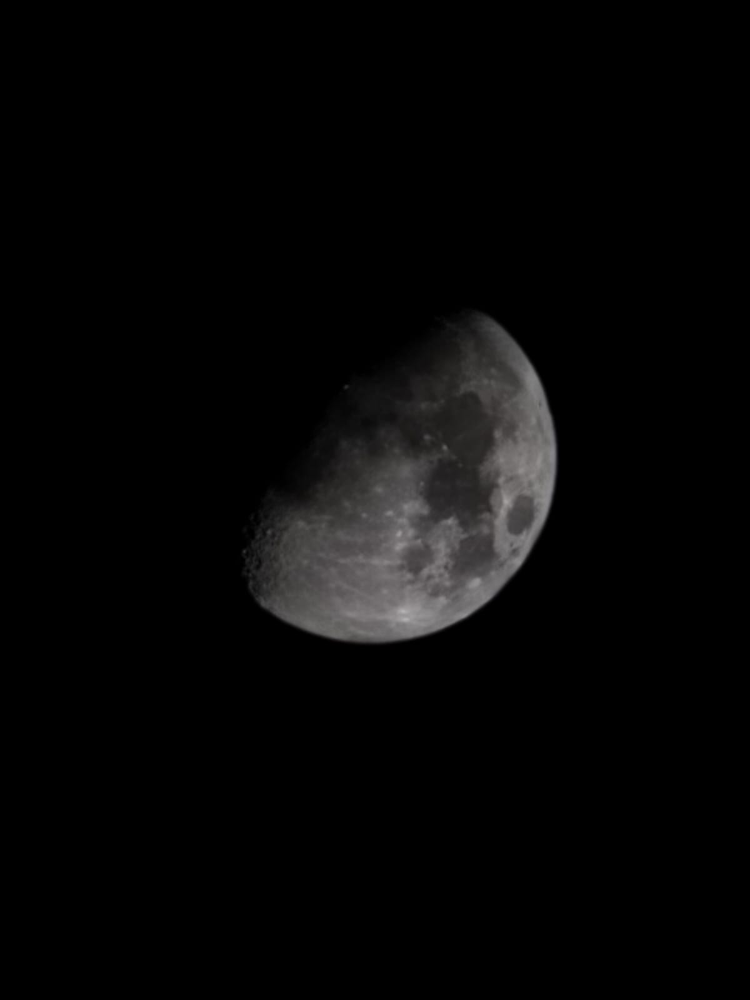
Registro nocturno del satélite natural desde la tranquilidad de la comunidad.
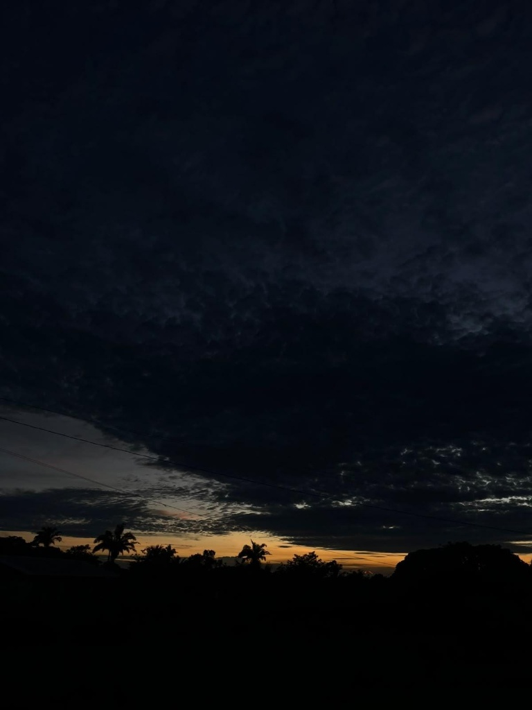
Últimos destellos de luz sobre la vegetación al anochecer.